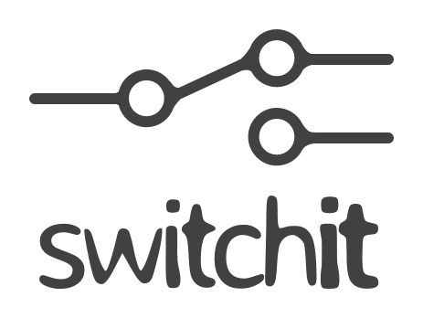

switchit
A no-nonsense framework for command-line switch parsing and command dispatching.
switchit enables you to write modern command-line applications using a straightforward API and features including:
- [x] Robust command definition using a simple object-oriented API
- [x] Effortless switch and positional argument parsing
- [x] Promise based command dispatching
- [x] Interactive prompt for missing values
- [x] Required and optional switches and parameters
- [x] Variadic switches and parameters
- [x] Nested command hierarchy (like
git remote add {args}) - [x] Advanced command chaining using
andandthen - [x] Dispatching via shortest unique prefix for sub-commands and switches
- [x] Custom command aliases and default sub-command
- [x] Complex command invocation using response files
- [x] Comprehensive built-in help command
There are so many features and functionality to describe that they got its own document just to outline them all!
Getting Started
Quick Start
Install switchit into your project:
$ npm install switchit --save
Create a .js file and add the following:
const Command = require('switchit').Command;
class SayHi extends Command {
execute (params) {
console.log(`Hi, ${params.name}!`);
}
}
SayHi.define({
switches: 'name'
});
new SayHi().run();
Run your project file, don't forget to pass --name:
$ node examples/sayhi.js --name John
Hi, John!
Support for positional arguments
You can also accept positional arguments as parameters in your command:
...
SayHi.define({
parameters: 'name' // changed this from "switches" to "parameters"
});
...
Look ma, no switches!
$ node examples/parameter.js Paul
Hi, Paul!
Do you want to read a parameter form either positional arguments or switches?
switchit supports it too!
Promises? switchit has those too!
The .run() method returns a promise!
...
new SayHi().run().then(() => {
console.log("Success!");
},(e) => {
console.error(`Oh no! ${e.message}`)
});
Check it out:
$ node examples/promise.js
Oh no! Missing value for parameter: "name"
$ node examples/promise.js George
Hi, George!
Success!
Interactive prompt for missing values
Wanna see somethiing awesome? Just add interactive: true to your command definition:
....
SayHi.define({
parameters: 'name',
interactive: true,
// Optionally add some help texts to improve the UI
// more info at docs/Features.md#built-in-help
help: {
'': 'This is a command that says hi!',
'name': 'Your name'
}
});
...
Run it with no arguments to see it in action:
$ node interactive.js
This is a command that says hi!
Press ^C at any time to quit.
Your name
? name:
Check docs/Interactive.md for more information on how to take advantage of this feature.
More examples and API
Once you get the hang of the examples above, make sure to check our examples directory or our complete docs for more information and API docs.
Contributing
Please read CONTRIBUTING.md for details on the code of conduct, and the process for submitting pull requests.
Versioning
switchit uses SemVer for versioning. For the versions available, see the
tags on this repository.
Authors
- Don Griffin - Author - dongryphon
See also the list of contributors who participated in this project.
License
This project is licensed under the MIT License - see the LICENSE file for details